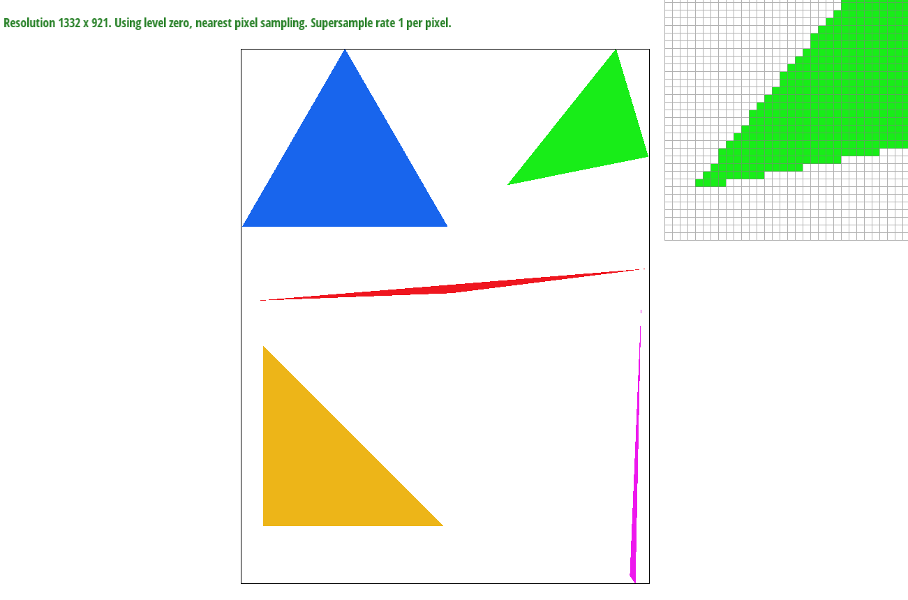
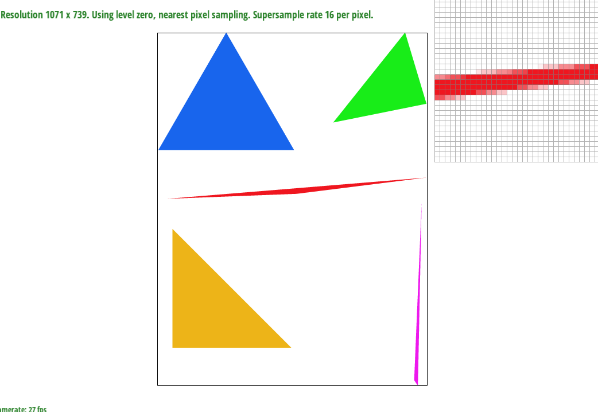

Overview
Give a high-level overview of what you implemented in this project. Think about what you've built as a whole. Share
your thoughts on what interesting things you've learned from completing the project.
Section I: Rasterization
Part 1: Rasterizing single-color triangles
We rasterize triangles by iterating through every pixel in the bounding box around each triangle. For each pixel at (x,
y), we check if the point at (x + 0.5, y + 0.5) is in the triangle using the formula given in the lecture slides. We
need to do this check twice, accounting for both clockwise and counterclockwise winding order. This algorithm is no
worse than checking each sample within the bounding box of the triangle because... that's literally what we're doing.

Part 2: Antialiasing triangles
Supersampling is useful because it allows us to essentially sample at a higher frequency, which in turns allows us to
capture more of the detail from the original image. This means less aliasing artifacts in practice. To achieve this, we
changed our rasterization pipeline to fill in a larger buffer and downsample at the very end before the final render.
To supersample, we increased the size of the sample buffer from width * height to width * height * sample_rate. We then
draw our lines, points, and triangles magnified sample_rate times within our larger buffer. Basically, we are just
rendering the same image but at a higher resolution. Then, in resolve_to_framebuffer, we downsample our larger sample
buffer into the actual framebuffer. Each sqrt(sample_rate) by sqrt(sample_rate) square in the larger sample buffer has
its colors averaged into the final buffer, resulting in smoother looking edges and less jaggies.
Without supersampling, jaggy artifacts are clearly present, and the edge of this very skinny triangle has a very obvious
staircasing effect.
At 4x supersampling, there is a light pinkish fuzz present on the edge of the triangle, which from a distance results in
the triangle's edge looking smoother. This is a direct result of the supersampling capturing more data before being
downsampled.

At 16x supersampling, the smoothed edge look from the previous image is more prominent in this example.
Part 3: Transforms
Here is the robot is doing a pirouette like a ballerina.
Section II: Sampling
Part 4: Barycentric coordinates
Barycentric coordinates allows us to express a point as a blend of the distance from each of the three vertices of a
triangle. In this example image (taken from the slides), the color of each point in the triangle is a blended color
which depends on its barycentric coordinates. The closer the point is to the top, the more blue it is. The closer it is
to the left, the more red it is, and the closer it is to the right, the more green it is.
Part 5: "Pixel sampling" for texture mapping
Pixel sampling is when we approximate a texture value based on the samples of defined pixels that already exist in the
image. In our case, nearest pixel sampling just uses the texture of the pixel that is closest
to our point, while bilinear sampling uses the closest square of 4 pixels to approximate the texture value. We used
pixel sampling to perform texture mapping by retrieving the values of our desired pixels (either the nearest
or the 4 pixels for bilinear) and computing the new texture value using formulas from lecture.
In the second image in svg/texmap, the latitude and longitude lines are more clearly defined when we switch to bilinear
sampling, as opposed to nearest sampling where the lines are more jagged and stretched. Similarly,
in the image of the parrot, nearest sampling makes the edges look blocky while bilinear sampling smooths things out.
There will be large differences between bilinear and nearest sampling when looking at high frequency textures or when
the texture is very small. In both of these cases, the textures vary at a very high rate from pixel to
pixel, which means that nearest sampling will fail to properly blend textures and result in a more choppy and jagged
image along the boundaries where the textures change. Meanwhile, since bilinear sampling accounts for the
surrounding pixels as well, it will do a better job of blending multiple different textures together.
Nearest sampling without supersampling (above)
Bilinear sampling without supersampling (above). Notice that the dotted looking latitude and longitude lines from
the image with nearest sampling looks more smoothed out.
Nearest sampling at 16x supersampling (above)
Bilinear sampling at 16x supersampling (above). Because the image is already supersampled (i.e. higher sampling rate
relative to frequency), bilinear filtering makes less of a difference.
Part 6: "Level sampling" with mipmaps for texture mapping
-
Level sampling is a technique that attempts to reduce aliasing on textures that are small in the screen space
while
still keeping sharpness on textures that are large in the screen space. It accomplishes this by storing several
levels
of the original texture, downsampled to certain resolutions. Then, the renderer must determine which of these
downsampled
textures to use for the final rendering. To do this, it estimates the size of the texture in world space by
taking two
adjacent pixels in screen space and comparing their distances when mapped to texture space. It does this for
each pixel,
comparing adjacently upwards and adjacently rightwards, and conservatively takes the maximum of both in order to
lean towards
the side of a blurry image with less aliasing rather than a sharp image with a lot of aliasing. Then, once the
level is
determined, if nearest level sampling is selected then that is the level that is rendered. If linear level
sampling is
selected, then the final color of the rendered pixel comes from a linear interpolation of the level calculated
and the next
highest level.
-
The pros and cons of each of the three techniques in terms of memory usage, speed, and anti-aliasing power are
described below.
-
Supersampling with multiple samples per pixel tends to take the most memory, in large part due to the
extra memory needed
to store these extra sample values before making our final calculation. This also leads to supersampling
being a slower
technique; as we increase the sample rate to 16 pixels, our computer often slows down significantly
while it makes the
computations. In terms of anti-aliasing power, supersampling is quite good at smoothing out edges and
borders.
-
Pixel sampling is probably the fastest technique that we developed in this project; for nearest sampling
we only had to
sample from one pixel, while in bilinear sampling we use 4 pixels. Either way, the amount of computation
in this technique
is significantly reduced compared to supersampling and level sampling, so it is the fastest of the
three.
However, the anti-aliasing power lags behind compared to the other two methods; it is reasonably good at
reducing high-frequency
textures but overall doesn't provide the same improvements that level-sampling and supersampling
provide.
-
Finally, level sampling provides the best anti-aliasing power of the three, particularly when looking at
zoomed out textures.
It is probably the most computation-intensive of the three methods though, so it is moderately slow and
has a significant
memory usage. It also suffers from a tendency to overblur high frequency, small textures, as well as only working on textures and not edges. However, the speed and memory usage are both better than supersampling while providing
very strong anti-aliasing
benefits.
Section III: Art Competition
If you are not participating in the optional art competition, don't worry about this section!
Part 7: Draw something interesting!